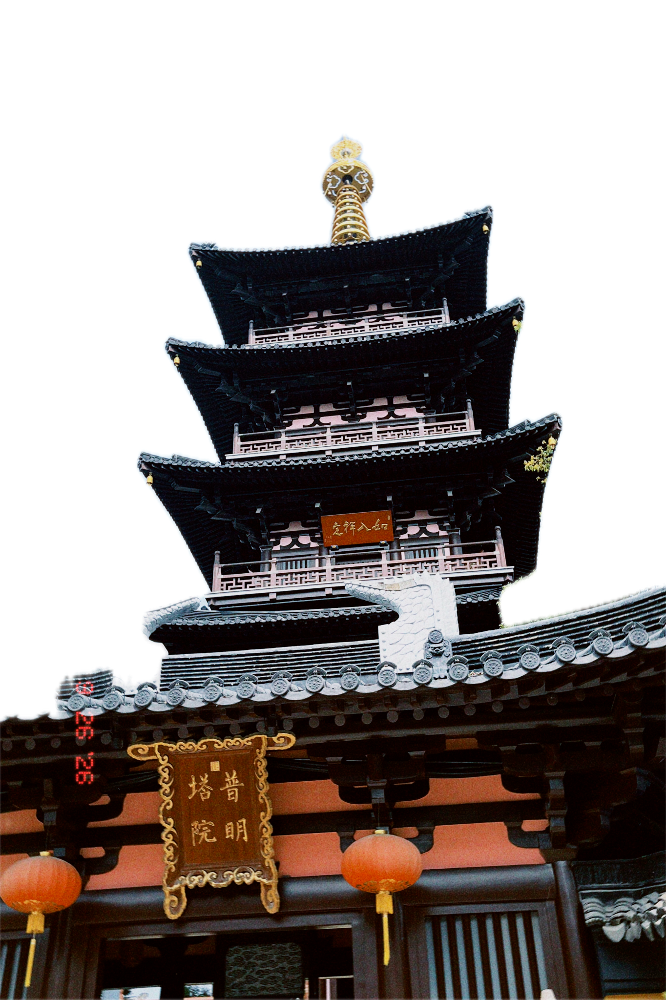

寒山寺·苏州
寒山寺位于苏州枫桥一带，因唐代诗人张继的《枫桥夜泊》而广为人知。寺院与河道、桥梁和街巷相互联系，形成江南水乡中兼具宗教生活与文学记忆的场所。图片中的普明宝塔是寺内醒目的建筑，层层屋檐向外舒展，栏杆与柱列形成重复的节奏，顶部塔刹则强化了向上的轮廓。这座宝塔于二十世纪九十年代重建，体现传统建筑形式在当代的延续。与横向展开的殿堂相比，塔的竖向体量为寺院建立了视觉中心。走近时可以观看木构与屋瓦的细部，退远时则能感受塔影与屋顶组成的层次。寒山寺的魅力，也来自建筑、钟声、流水与诗歌共同构成的空间体验。